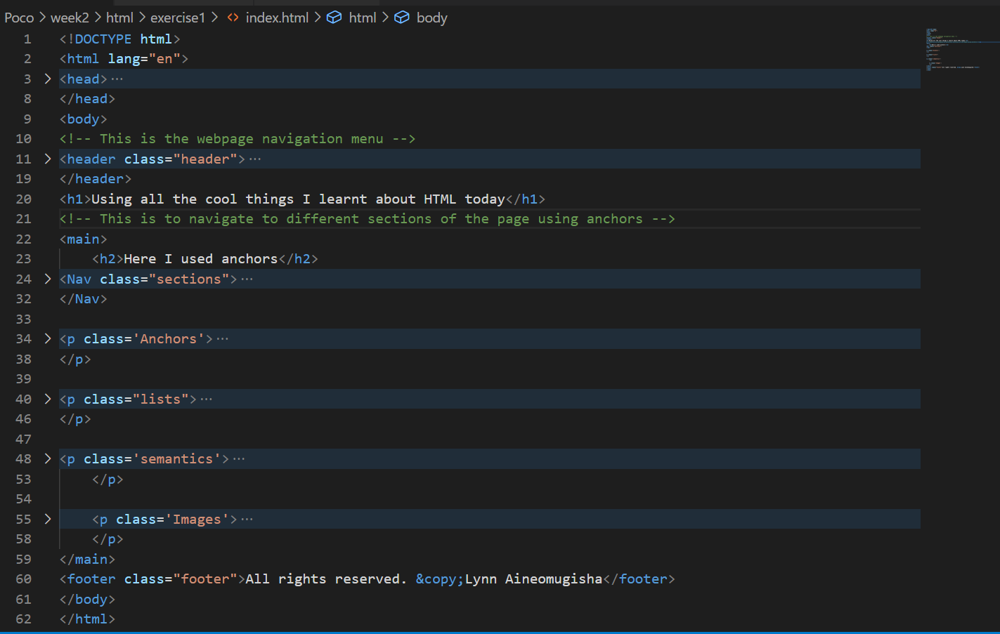

Here I used anchors
HTML Anchors
An anchor is a piece of text which marks the beginning and/or the end of a hypertext link. The text between the opening tag and the closing tag is either the start or destination (or both) of a link. Attributes of the anchor tag are as follows. I used the a anchor to point to different sections of this page aboveHTML lists
HTML lists are used to present list of information in well formed and semantic way. There are three different types of list in HTML and each one has a specific purpose and meaning.- This is an example of unordered list— The are used to create a list of related items, in no particular order.
- This is an example of an Ordered list — They are used to create a list of related items, in a specific order. For example when describing a recipe.
- This is an example of a description list —
- They are used to create a list of terms and their descriptions.
HTML Semantics
Semantic HTML5 defines specific tags to indicate clearly what role is played by the content those tags contain. That explicit information helps robots/crawlers like Google and Bing to better understand which content is important, which is a subsidiary, which is for navigation, and so on.By adding semantic HTML tags to your pages, you provide additional information that helps Google and Bing understand the roles and relative importance of the different parts of your page. more on html semantic tags
HTML Images
This is an image of the boilerplate I created for this assignment. A boilerplates are sections of code that have to be included in many places with little or no alteration.